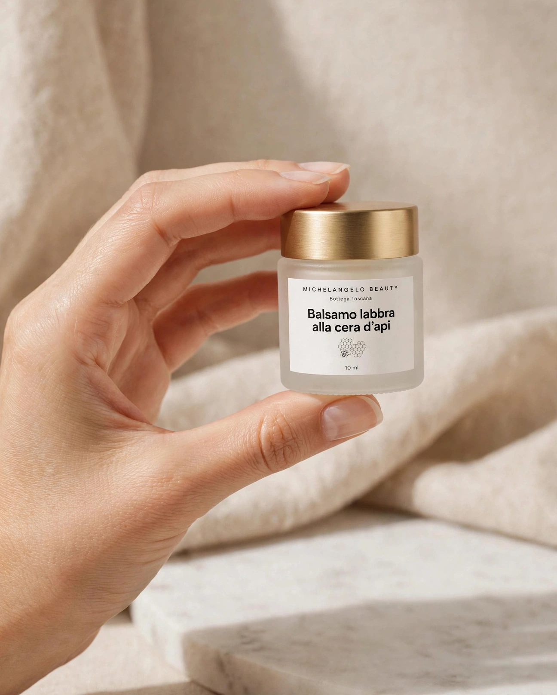
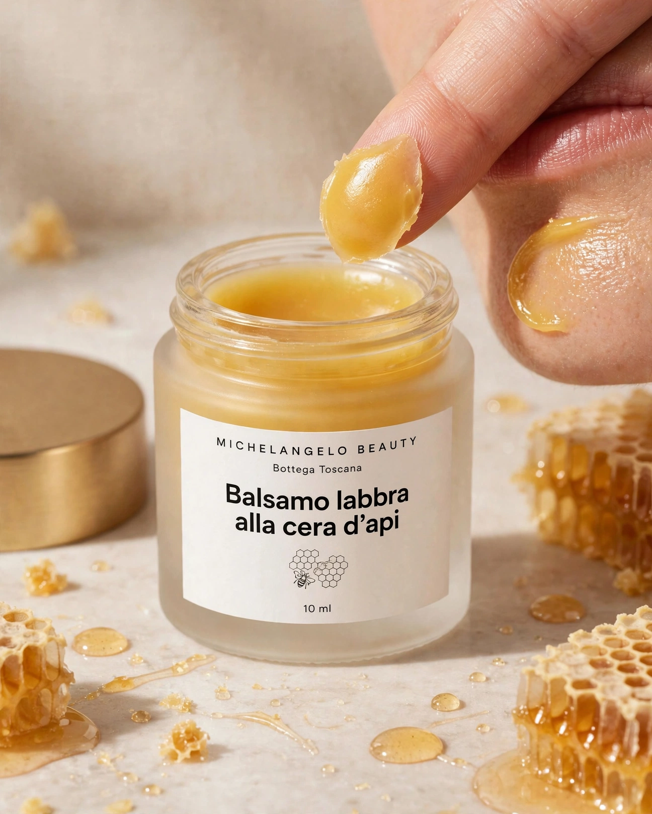

Opera n. VIMani e labbra



Mani e labbra Opera n. V
Balsamo labbra alla cera d'api
Cera d'api di un apicoltore della Garfagnana, burro di karité e olio di ricino. Protegge e ammorbidisce le labbra.
7,00 € 10 ml · IVA inclusa
1
- Spedizione 4,90 € · gratuita da 49 €
- Arriva in 2-4 giorni lavorativi con la spedizione standard
- Reso entro 14 giorni dalla consegna · come funziona
Scheda dell'opera
- Opera
- n. V · linea Mani e labbra
- Materiali
- Cera d'api della Garfagnana, burro di karité, calendula
- Tecnica
- Colato a mano in vasetti di vetro satinato
- Formato
- 10 ml · PAO 12M
- Lotto
- MB-26-110 (lotto in vendita ora)
- Origine
- 100% di ingredienti di origine naturale (ISO 16128)
Descrizione
Un piccolo vasetto di vetro satinato da tenere in borsa. La cera d'api protegge, il burro di karité e l'olio di ricino ammorbidiscono le labbra secche, anche d'inverno. Contiene un macerato di calendula. Non è profumato.
Come si usa
Prendi un po' di balsamo con la punta del dito e stendilo sulle labbra quando serve. Va bene anche sulle cuticole.
Ingredienti tocca una parola
Elenco in ordine decrescente di quantità. 100% di ingredienti di origine naturale, calcolato secondo la norma ISO 16128.
Conservazione e PAO
Con il caldo si ammorbidisce: d'estate non lasciarlo in auto o al sole. Torna solido al fresco.
PAO 12M: usalo entro dodici mesi dalla prima apertura.
Persona responsabile
Michelangelo Beauty Bottega s.n.c., Via della Bottega 0, 55000 Colline Apuane (LU), P.IVA 00000000000, bottega@michelangelobeauty.example, tel. 000 000 0000 (dati di fantasia).
Domande
Va bene per i bambini?
Gli ingredienti sono semplici, ma per i più piccoli chiedi sempre al pediatra.
Perché è in ml?
È il volume del vasetto. Il contenuto è un balsamo solido.
Si abbina con

Opera n. IViso

Opera n. VIISaponi